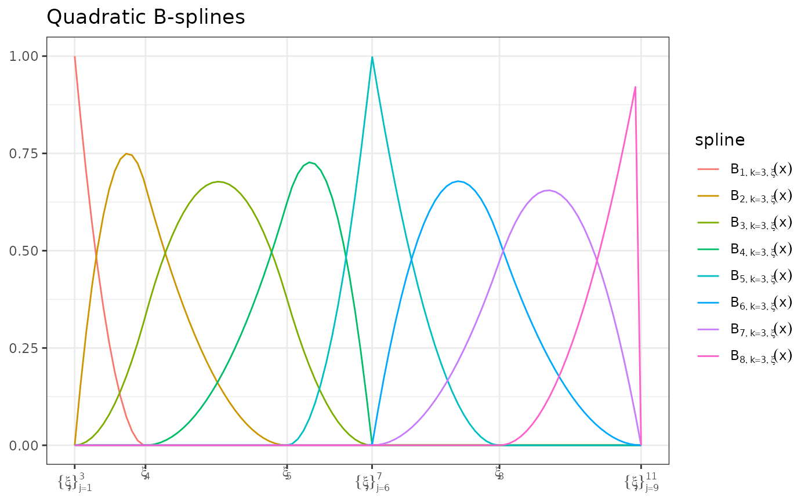
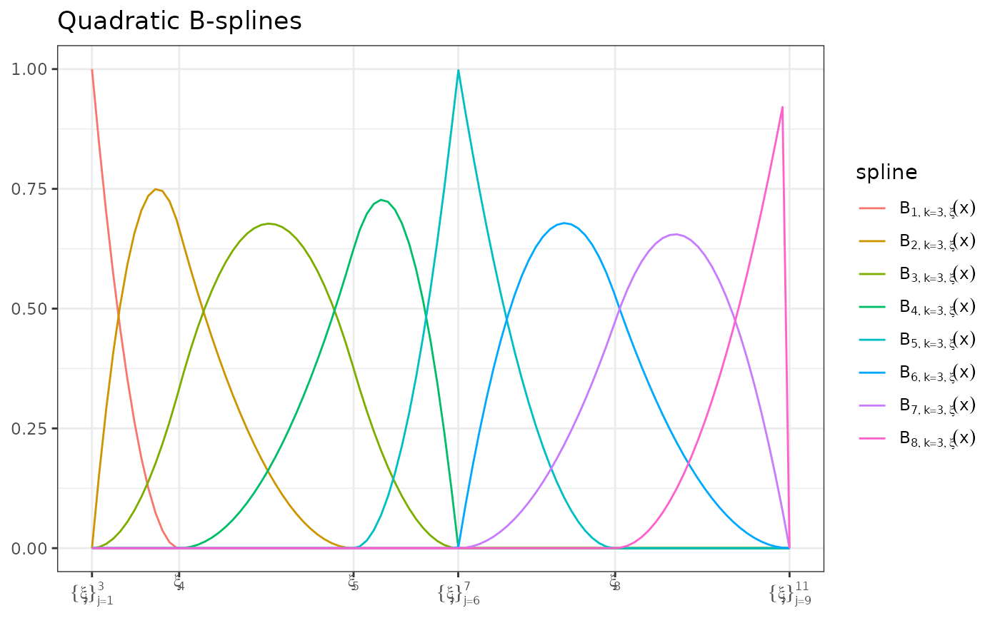

An implementation of Carl de Boor's recursive algorithm for building B-splines.
Usage
bsplines(x, iknots = NULL, df = NULL, bknots = range(x), order = 4L)Details
There are several differences between this function and
bs.
The most important difference is how the two methods treat the right-hand end
of the support. bs uses a pivot method to allow for
extrapolation and thus returns a basis matrix where non-zero values exist on
the max(Boundary.knots) (bs version of
bsplines's bknots). bsplines use a strict definition of
the splines where the support is open on the right hand side, that is,
bsplines return right-continuous functions.
Additionally, the attributes of the object returned by bsplines are
different from the attributes of the object returned by
bs. See the vignette(topic = "cpr", package =
"cpr") for a detailed comparison between the bsplines and
bs calls and notes about B-splines in general.
References
C. de Boor, "A practical guide to splines. Revised Edition," Springer, 2001.
H. Prautzsch, W. Boehm, M. Paluszny, "Bezier and B-spline Techniques," Springer, 2002.
See also
plot.cpr_bs for plotting the basis,
bsplineD for building the basis matrices for the first and
second derivative of a B-spline.
See update_bsplines for info on a tool for updating a
cpr_bs object. This is a similar method to the
update function from the stats package.
vignette(topic = "cpr", package = "cpr") for details on B-splines and
the control polygon reduction method.
Examples
# build a vector of values to transform
xvec <- seq(-3, 4.9999, length = 100)
# cubic b-spline
bmat <- bsplines(xvec, iknots = c(-2, 0, 1.2, 1.2, 3.0), bknots = c(-3, 5))
bmat
#> Basis matrix dims: [100 x 9]
#> Order: 4
#> Number of internal knots: 5
#>
#> First 6 rows:
#>
#> [,1] [,2] [,3] [,4] [,5] [,6] [,7] [,8] [,9]
#> [1,] 1.0000000 0.0000000 0.000000000 0.000000e+00 0 0 0 0 0
#> [2,] 0.7766405 0.2170642 0.006253393 4.187719e-05 0 0 0 0 0
#> [3,] 0.5892937 0.3864632 0.023908015 3.350175e-04 0 0 0 0 0
#> [4,] 0.4347939 0.5127699 0.051305529 1.130684e-03 0 0 0 0 0
#> [5,] 0.3099750 0.6005573 0.086787597 2.680140e-03 0 0 0 0 0
#> [6,] 0.2116711 0.6543984 0.128695884 5.234649e-03 0 0 0 0 0
# plot the splines
plot(bmat) # each spline will be colored by default
plot(bmat, color = FALSE) # black and white plot
plot(bmat, color = FALSE) + ggplot2::aes(linetype = spline) # add a linetype
# Axes
# The x-axis, by default, show the knot locations. Other options are numeric
# values, and/or to use a second x-axis
plot(bmat, show_xi = TRUE, show_x = FALSE) # default, knot, symbols, on lower
 # axis
plot(bmat, show_xi = FALSE, show_x = TRUE) # Numeric value for the knot
# locations
plot(bmat, show_xi = TRUE, show_x = TRUE) # symbols on bottom, numbers on top
# quadratic splines
bmat <- bsplines(xvec, iknots = c(-2, 0, 1.2, 1.2, 3.0), order = 3L)
#> Warning: At least one x value >= max(bknots)
bmat
#> Basis matrix dims: [100 x 8]
#> Order: 3
#> Number of internal knots: 5
#>
#> First 6 rows:
#>
#> [,1] [,2] [,3] [,4] [,5] [,6] [,7] [,8]
#> [1,] 1.0000000 0.0000000 0.000000000 0 0 0 0 0
#> [2,] 0.8449156 0.1529078 0.002176594 0 0 0 0 0
#> [3,] 0.7028908 0.2884028 0.008706377 0 0 0 0 0
#> [4,] 0.5739256 0.4064850 0.019589348 0 0 0 0 0
#> [5,] 0.4580200 0.5071545 0.034825508 0 0 0 0 0
#> [6,] 0.3551739 0.5904113 0.054414856 0 0 0 0 0
plot(bmat) + ggplot2::ggtitle("Quadratic B-splines")

# axis
plot(bmat, show_xi = FALSE, show_x = TRUE) # Numeric value for the knot
# locations
plot(bmat, show_xi = TRUE, show_x = TRUE) # symbols on bottom, numbers on top
# quadratic splines
bmat <- bsplines(xvec, iknots = c(-2, 0, 1.2, 1.2, 3.0), order = 3L)
#> Warning: At least one x value >= max(bknots)
bmat
#> Basis matrix dims: [100 x 8]
#> Order: 3
#> Number of internal knots: 5
#>
#> First 6 rows:
#>
#> [,1] [,2] [,3] [,4] [,5] [,6] [,7] [,8]
#> [1,] 1.0000000 0.0000000 0.000000000 0 0 0 0 0
#> [2,] 0.8449156 0.1529078 0.002176594 0 0 0 0 0
#> [3,] 0.7028908 0.2884028 0.008706377 0 0 0 0 0
#> [4,] 0.5739256 0.4064850 0.019589348 0 0 0 0 0
#> [5,] 0.4580200 0.5071545 0.034825508 0 0 0 0 0
#> [6,] 0.3551739 0.5904113 0.054414856 0 0 0 0 0
plot(bmat) + ggplot2::ggtitle("Quadratic B-splines")
